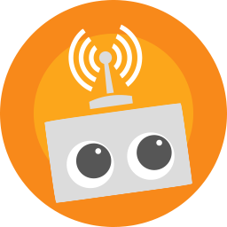

All
Unread
Comments
Follows
Likes
Older than a month
Happy Anniversary with WordPress.com!

Connecting your blog to your Google+ profile increases reader engagement.
 Happy Anniversary with WordPress.com!
Happy Anniversary with WordPress.com!